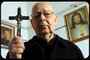

< < < Back
What I Learned From The Exorcist – Return Of Kings
I converted to Catholicism at the age of 24. Three years later, being an unmarried man filled with zeal for the faith, I entered the seminary to study for the priesthood. American seminaries have had a rough time over the last forty years; author Michael Rose documented some of it in his book, “Goodbye, Good Men.” In short, for many years seminaries were hellholes of heresy and homosexuality. They’ve improved much since the dark days of the 1980s and 90s, and my own experience was mostly positive.
However, some seminaries still have notable blind spots. It’s no great secret that the Catholic priesthood is disproportionately homosexual compared to the general population, despite the Church’s official ban on homosexuals from Holy Orders. It creates a vicious cycle where the Church needs more good men to be ordained priests, but good men shun fields that are dominated by gays and women (80% of lay volunteers and employees at the parish and diocesan level are women).
I Meet The Exorcist
I arrived at the seminary at the ripe old age of 27, part of the smattering of white men in an institution filled mostly by young Mexicans and Asians, either Filipinos or Vietnamese. The faculty encourages the men to form small support groups: five or six who would form friendships and support each other through the trials and tribulations of priestly life.
I fell in with some of the other white guys. It was a lot of fun: going out for tacos, cigars, whiskey, movies, and griping about politics, liberal faculty, and bad liturgy.
Who says priests can’t have fun?
The one time my writing has ever gotten me in trouble in real life was when I was a seminarian. I wrote to a priest friend back home about my experiences, describing both the good and the bad. Something I said pissed him off because by the end of that year the rector expressed “concerns” about me and wanted a meeting with my vocation director and me. That was the beginning of the end of my time as a seminarian.
The vocation director at the time also served as the diocesan exorcist. On the morning of our meeting with the rector, he said, “I need to make a stop along the way. You’re welcome to assist if you want.”
“Assist with what?” I asked.
“I need to bless and cleanse an infested house,” he replied.
“Oh. Uh… what do I need to do?”
“Well, first we both need to go to confession.”
The Nature Of Evil
Exorcism is a subset of “Deliverance Ministry.” All baptized Christians may offer prayers of deliverance from demonic oppression, but only a validly ordained Catholic priest, with the authorization of his bishop, can perform exorcisms (as Roger Ebert once said, everybody knows that if you’ve got demons, you call the Catholics.)
The Church is initially skeptical of all claims of paranormal activity. Before people can speak with an exorcist, they are asked to see medical doctors and trained psychiatrists to rule out any physical or mental illnesses. Nine times out of ten, that’s exactly what they’re suffering. The exorcist puts on his stole for that tenth case.

According to Catholic theology, ordinarily we have free will. We are not guilty of sin unless we freely choose to do evil. Only the most hardcore psychopaths choose evil for the sake of it. Most people choose to do evil because they believe it’s for a greater good: think of the woman who blows up her family because she believes she’ll be happier once she ditches her boring beta schlub, or the man who embezzles money from his job because he believes he deserves better than what the company gives him.
In the normal order of things, demons cannot force us to act but can only tempt us. These mundane temptations are considered ordinary demonic activity. However, if we are immersed in a sinful lifestyle then we are more susceptible to temptation and demonic influence than a man who lives righteously. There are several levels of extraordinary demonic activity.
The Power Of Christ Compels You
Demonic oppression does not entail any loss of consciousness or involuntary actions, but what appears to be extraordinarily bad luck. An example from the Bible is the Book of Job: God allows Satan to torment Job with afflictions to his family, his business, and his health. The afflicted individual is sometimes physically struck: both St. John Vianney (1786—1859) and St. Padre Pio (1887—1968) were beaten bloody by unseen spirits, much to the consternation of witnesses.
Demonic obsession afflicts the mind in ways that cannot be explained by natural mental illness. The victim suffers from obsessive and irrational thoughts that persist no matter how energetically they fight them. Almost always it affects their dreams through night terrors. The object of this demonic assault is to wear down the victim’s defenses, to shake their resolve. If the victim allows this to happen, then they often end in complete anguish, despair, and thoughts of suicide.
Of course everyone knows about the final stage: possession, the subject of countless books and movies. We’re all familiar with William Peter Blatty’s masterpiece, The Exorcist. The phenomena portrayed in the film are exaggerated for dramatic effect, but they are based in factual accounts of exorcisms: the possessed individual gains superhuman strength, they can speak in elegant Latin despite never studying the language before, they begin calling out the sins of everyone in the room, or they may levitate above their beds.
Demonic infestation is different: it afflicts inanimate objects, places, or animals. When people speak of haunted houses, it’s possible that a demonic infestation is to blame for the preternatural goings on inside.
Vade Retro Satana
The exorcist and I pulled up to the house in a large California suburb. “Time for a smoke?” I asked.
“Sure.”
As I lit up, I said, “So what’s going on?”
“This couple who lives here called my office complaining about problems with the house. I came out a few days ago to meet with them. They say some rooms are freezing cold, they hear bangs and laughter at night, and there’s just a heavy feeling when they’re inside.”
“What do you think?”
“I did some research on the house’s history in addition to what they told me about it. There’s definitely a good chance this place is infested. So I’m going to use some blessed salt and holy water in the four corners, and then I’ll celebrate the Mass in their living room. You’ll be my altar server. Ready?”
“As I’ll ever be.”
Crux sacra sit mihi lux, non draco sit mihi dux
This took place in the middle of June. It was about 90 degrees outside, but as soon as we crossed the threshold into the house it was like stepping into a meat locker. I went from sweating a bit to being able to see my breath, and it definitely wasn’t because of any air conditioning.
The couple’s infant child was in a crib in the living room. They said the baby would wail and cry uncontrollably inside its upstairs room until they took him out. I noticed that the baby, bundled up in blankets, and the pet dog spent most of that morning staring at the top of the staircase and whimpering.
A murder had taken place in the house during the Great Depression. During the 1960s, the then residents practiced Santeria. The residents immediately prior to this couple were into Tarot cards and Ouija boards. If you take nothing else from this column, hear me now and believe me later: stay away from this stuff. I don’t care if you think it’s all superstitious mumbo-jumbo, but whatever you do, do not screw around with the occult.
I Cast Thee Out
I literally carried the exorcist’s water as we went around the house. He liberally sprinkled holy water everywhere, scattered blessed salt in the corners, reciting prayers of deliverance from the ritual book. One of the rooms upstairs was definitely the coldest. Downstairs, the dog barked as the priest entered that room.
Afterward, we celebrated Mass downstairs without a hitch. The priest interviewed the couple again. They were fallen away Catholics who weren’t yet married. The priest said that he can only do so much, and that it was up to them to go to confession, get married, and begin a regular life of prayer. When we finished, I noticed that the house was much warmer. Again, the couple was with us the entire time, so nobody was messing around with the AC.
The exorcist takes it all in stride. Another time I was doing volunteer work at his parish, when he told the office staff, “I’m seeing someone today about deliverance. If you hear anything strange, don’t worry, it’s just the devil.” His patient, so to speak, was a mousy middle-aged housewife. She went into his office with him. Later on we heard what sounded like a raspy old man screaming that he would murder us all and eat our souls. All in a day’s work I suppose.
Fr. Gabriele Amorth, chief exorcist of the diocese of Rome
There Are More Things In Heaven And Earth
A few years ago there was a movie called The Rite, based on the life of San Jose exorcist Father Gary Thomas. I’ve met Father Thomas, and he’s an awesome priest. Near the end of the film, the demon is taunting the protagonist who has been suffering terrible doubts about his faith. “Do you believe now, little atheist priest? Do you believe in me now?” the demon hisses.
“Yes, I believe in the devil,” the priest admits. “And that means I believe in God too.” The look on the possessed man’s face is priceless.
If being “red pill” means seeing the world as it really is, then men need to understand that there is more to this world than sensory experience. You may not believe in the supernatural but that doesn’t mean it doesn’t exist. To borrow a line from Gunnery Sergeant Hartman, you had best unfuck yourself or Satan’s minions will unscrew your head and shit down your neck.
Read More: What I Learned From Death


{kind=link}
{kind=link}
{kind=link}
{kind=link}